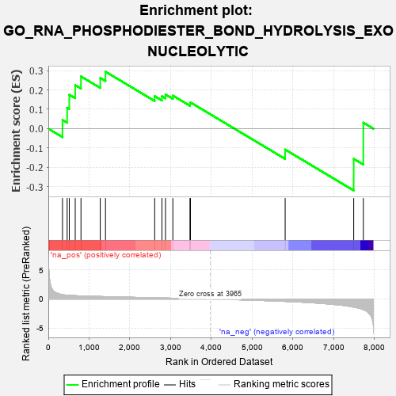

| | | Dataset | 7d |
| Phenotype | NoPhenotypeAvailable |
| Upregulated in class | na_neg |
| GeneSet | GO_RNA_PHOSPHODIESTER_BOND_HYDROLYSIS_EXONUCLEOLYTIC |
| Enrichment Score (ES) | -0.31912148 |
| Normalized Enrichment Score (NES) | -0.75817794 |
| Nominal p-value | 0.7859238 |
| FDR q-value | 0.99521 |
| FWER p-Value | 1.0 |
Table: GSEA Results Summary

Fig 1: Enrichment plot: GO_RNA_PHOSPHODIESTER_BOND_HYDROLYSIS_EXONUCLEOLYTIC
Profile of the Running ES Score & Positions of GeneSet Members on the Rank Ordered List
| PROBE | GENE SYMBOL | GENE_TITLE | RANK IN GENE LIST | RANK METRIC SCORE | RUNNING ES | CORE ENRICHMENT | | 1 | CNOT7 | | | 348 | 0.750 | 0.0448 | Yes |
| 2 | CNOT6 | | | 462 | 0.655 | 0.1079 | Yes |
| 3 | CNOT2 | | | 514 | 0.625 | 0.1753 | Yes |
| 4 | PARN | | | 660 | 0.572 | 0.2246 | Yes |
| 5 | EXD2 | | | 801 | 0.532 | 0.2697 | Yes |
| 6 | CNOT3 | | | 1274 | 0.435 | 0.2618 | Yes |
| 7 | NOCT | | | 1402 | 0.409 | 0.2942 | Yes |
| 8 | PDE12 | | | 2608 | 0.211 | 0.1676 | No |
| 9 | XRN1 | | | 2786 | 0.185 | 0.1672 | No |
| 10 | DCPS | | | 2873 | 0.170 | 0.1765 | No |
| 11 | PAN3 | | | 3054 | 0.142 | 0.1707 | No |
| 12 | CNOT1 | | | 3473 | 0.081 | 0.1277 | No |
| 13 | ERI1 | | | 3486 | 0.079 | 0.1355 | No |
| 14 | PAN2 | | | 5807 | -0.408 | -0.1080 | No |
| 15 | XRN2 | | | 7488 | -1.384 | -0.1558 | No |
| 16 | DCP2 | | | 7724 | -1.833 | 0.0310 | No |
Table: GSEA details [plain text format]
Fig 2: GO_RNA_PHOSPHODIESTER_BOND_HYDROLYSIS_EXONUCLEOLYTIC: Random ES distribution
Gene set null distribution of ES for GO_RNA_PHOSPHODIESTER_BOND_HYDROLYSIS_EXONUCLEOLYTIC